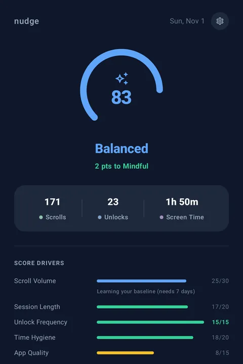
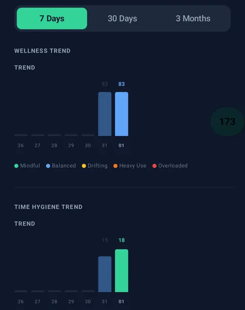
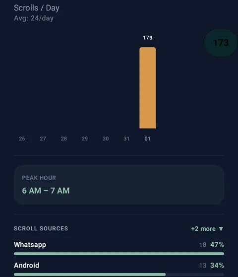

Mindful phone use, one nudge at a time.
Nudge is a free, open-source Android app for doomscrolling prevention and digital wellbeing. It helps you cut back on compulsive phone use with a live scroll counter, a daily wellness score, and gentle nudges when you scroll fast.
Free and open source · Android 7.0+ · Nudge is Android-only for now.
You’re on an iPhone. Nudge is Android-only for now. Join the waitlist and we’ll email you once when it launches on iPhone.
See the bubble in action
What you get
-
Daily wellness score
One score from 0 to 100, built from scroll volume, session length, unlocks, bedtime habits and the apps you use, so a heavy day tells you why, not just that it was heavy.
-
Live bubble
A draggable counter floats over every app and ticks up with each scroll. It snaps to the screen edge and stays out of the way.
-
Gentle nudges
Scroll fast and the bubble glows amber. Keep going and you get a notification, then a full-screen prompt to take a short break. Ignore is always an option.
-
7, 30 and 90-day trends
Follow your score, scrolls, unlocks and screen time over the last week, month or three months, plus your peak hour.
-
Per-app breakdown
Find out which apps take most of your scrolling, so you know where to start cutting back.
-
Privacy-first
No account and no ads. Your data is stored on your phone, and the code is open source under Apache 2.0.



Privacy and permissions
What stays private
- No account. Nothing to sign up for.
- No ads, no trackers. No Google SDKs, no ad IDs.
- Counting happens on your phone. Your history lives in a local database on the device.
- Analytics are opt-in and off by default. Builds that include anonymous analytics ask once, and the answer is no unless you say yes. The APK on this page and the F-Droid build have analytics removed entirely, so they send none.
- Laptop sync is optional. If you switch on Chrome-extension sync (off by default), your daily counts are shared with your own laptop. Switch it off and the sync code is deleted.
Why Nudge asks for Accessibility
Android only lets an app notice scrolling in other apps through an Accessibility service, so that is how Nudge counts.
Nudge only listens for the signal that a scroll happened, plus which app it was in. It never reads screen content: no text, messages, images or passwords. It doesn’t tap or type for you either.
It also asks for Display over other apps, which is what lets the bubble float on top of other apps. You can revoke either permission at any time in Android settings.
Frequently asked questions
What is Nudge?
Nudge is a free, open-source Android app that counts your scrolls across every app in real time and turns that, plus your screen time and unlocks, into a daily wellness score. A floating bubble shows the live count, and gentle nudges appear when you scroll fast.
Can Nudge help me stop doomscrolling or cut down phone addiction?
Nudge is built to help you notice and cut back on compulsive scrolling. It counts your scrolls live, the bubble glows amber when you scroll fast, and if you keep going you get a notification and then a full-screen prompt to take a break. It is a self-awareness tool, not a medical treatment.
Is Nudge free?
Yes. Nudge is free with no account, no ads, and no in-app purchases. The source code is open under the Apache License 2.0.
Why does Nudge need the Accessibility permission?
Android only lets an app detect scrolling inside other apps through an Accessibility service, so that is how Nudge counts scrolls across your device. It also needs Display over other apps to show the floating bubble. Both can be revoked at any time in Android Settings. More on the Accessibility permission.
Does Nudge read my screen?
No. Nudge's Accessibility service only detects that a scroll happened and which app it was in. It never reads on-screen text, messages, images, or passwords, and it never taps or types for you.
Does Nudge work on iPhone?
Not yet. Nudge is Android-only for now. You can join the iPhone waitlist below and we'll email you once when it launches.
Does Nudge send my data anywhere?
By default, no. Your scroll and usage history stays in a local database on your phone. Anonymous analytics are opt-in and off by default, and the APK on this page has them removed entirely. An optional Chrome-extension sync feature, also off by default, sends daily counts to your own laptop only if you turn it on.
Get Nudge
Nudge is Android-only for now.
Android
Download for Android Get it on F-DroidFree APK, signed and built from the public source by GitHub Actions. Your phone may ask you to allow installs from your browser the first time.
On a computer? Scan with your Android phone.

Coming to iPhone: join the waitlist
We’ll email you once, when Nudge launches on iPhone. Never shared, never sold.
Your download has started
Set up Nudge in about two minutes:
- Install. Open the downloaded file from your notifications or Downloads. If Android asks, allow installs from your browser, then tap Install.
- Turn on tracking. Open Nudge and follow the Home screen to switch it on under Settings → Accessibility. If Android says the setting is restricted: Settings → Apps → Nudge → ⋮ → Allow restricted settings, then try again.
- Show the bubble (optional). Allow “Display over other apps”, then tap Show Bubble to see your live count.
- Give it a week. Your score works from day one; its scroll-volume part learns your baseline over the first 7 days.
Take the 30-day challenge
Get this setup guide by email, plusLeave your email and we’ll send one check-in at day 30 to ask how it’s going. Reply anytime; a real person reads every reply.
Never shared, never sold.